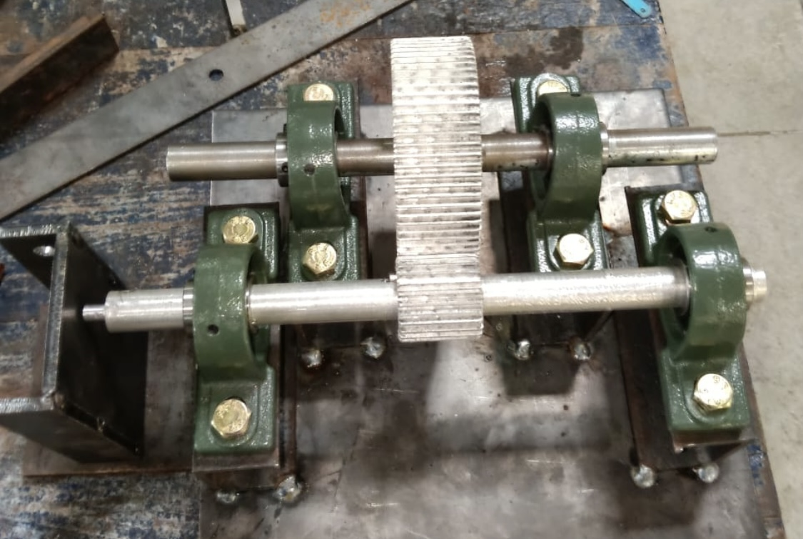

This was a from-scratch power-transmission build: defining the gear pair, producing the blanks on the lathe, cutting the teeth, and assembling a housing that holds the shafts in alignment. The model below is the full assembly — drag to rotate, scroll to zoom, and use the checklist to isolate components.
Quick highlights
- Custom Gear Teeth: Machined custom gear tooth profiles from mild steel and cast iron blanks.
- Precision Alignment: Engineered a custom housing that maintains precise axial alignment of high-speed shafts.
- Interactive CAD: Configured a full assembly OBJ model with component-level controls and slider exploded view.
Key outcomes
Power Transmission
Smooth Running
Tested under load demonstrating efficient torque transfer with zero gear binding.
Tolerances
Precise Press Fit
Shafts and bearings pressed to exact mechanical tolerances for minimum runout.
Exploded assembly view
OBJ · drag · scroll · toggle · explode
Video — working
Build photos


Materials · equipment · processes
Type
Single-stage spur gear reduction
Materials
Mild steel · cast iron housing
Equipment
Lathe · milling machine · gear-cutting setup
Processes
CAD (Fusion 360) · turning · gear cutting · milling · assembly
Impact / outcome
A working single-stage reduction assembled from self-machined parts — end-to-end ownership from CAD model to a unit that runs.